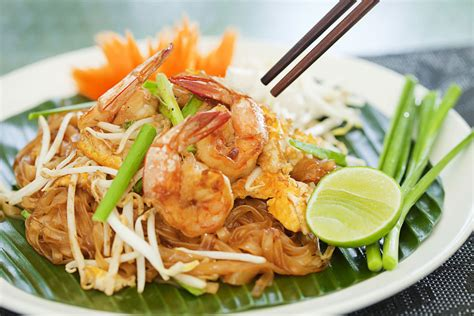

Pad Thai

A popular Thai stir-fried noodle dish made with rice noodles, shrimp or chicken, scrambled eggs, bean sprouts, and peanuts, all tossed in a tangy tamarind sauce. It’s often garnished with lime and fresh herbs.
Ingredients
- For the Pad thai Sauce:
- 3 tbsp fish sauce
- 1 tbsp soy sauce (optional for color)
- 3 tbsp tamarind paste (can substitute with lime juice if unavailable)
- 1 ½ tbsp palm sugar (or brown sugar)
- 1 tsp chili powder (optional, for heat)
- For the Stir Fry:
- 200g rice noodles (flat, about ¼-inch wide)
- 2 tbsp vegetable oil
- 200g chicken breast or shrimp (peeled and deveined)
- 2 eggs (lightly beaten)
- 1-2 cloves garlic (minced)
- 1 shallot (thinly sliced)
- 100g firm tofu (cubed)
- 1 cup bean sprouts
- 2 green onions (cut into 1-inch pieces)
- 2 tbsp roasted peanuts (crushed)
- Lime wedges (for garnish)
- Fresh cilantro (for garnish)
- Optional Toppings
- Red chili flakes (for extra heat)
- Pickled radish or vegetables